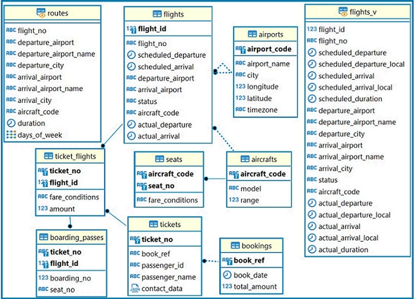

SQL проект по базе данных бронирования билетов.
- Выведите название самолетов, которые имеют менее 50 посадочных мест.
- Выведите процентное изменение ежемесячной суммы бронирования билетов, округленной до сотых.
- Выведите названия самолетов не имеющих бизнес - класс. Решение должно быть через функцию array_agg.
- Вывести накопительный итог количества мест в самолетах по каждому аэропорту на каждый день, учитывая только те самолеты, которые летали пустыми и только те дни, где из одного аэропорта таких самолетов вылетало более одного. В результате должны быть код аэропорта, дата, количество пустых мест и накопительный итог.
- Выведите количество пассажиров по каждому коду сотового оператора, если учесть, что код оператора - это три символа после +7.
-
Классифицируйте финансовые обороты (сумму стоимости перелетов) по маршрутам:
-- до 50 млн – low; -- от 50 млн включительно до 150 млн – middle;
-- от 150 млн включительно – high. Выведите в результат количество маршрутов в каждом полученном классе.
ER-диаграмма
В проекте созданы запросы на извлечение данных (SELECT) с использованием фильтраций, группировок, сортировок, соединений (JOIN), агрегатных функций, СТЕ и оконных функций. Описание БД можно посмотреть по ссылке.
Подробную информацию по проекту и сами запросы можно посмотреть ниже.